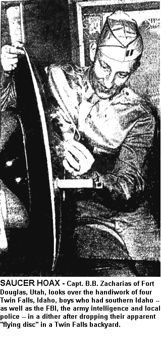

Twin Falls, Idaho - 1947
Army, FBI, Police in
Circles
Lewiston, Idaho Daily Tribune
July 12, 1947
Twin Falls, Idaho, July 11, --AP-- Four teen age
boys skimmed a "flying saucer" into this town today and before the turmoil
died down tonight with their admission it was "all a joke," the FBI, army
intelligence and local police spent a dizzy day trying to figure out their
gadget.

The home-made disc, replete with a plexi-glass dome, radio tubes, burned
wires and glistening sides of silver and gold was discovered in the yard
of the T.H. Thompson residence this morning by Mrs. Fred Easterbrook.
Assistant Police Chief L. D. McCracken withheld the names of pranksters
because they were juveniles and no court action will be taken against them.
He said they admitted the hoax after he was "tipped" that one of the boys
knew something about the case.
Made In Two Days
The boys aged from 15 to 16 years were quoted by Mr McCracken
as saying that they spent two days making the disc which measures 30 1/2
inches across.
It resembled two band cymbals put together. However, the disc
looked "real" enough that an FBI agent took one look, notified his district
office in Butte, Mont., and three army officers came post haste from Fort
Douglas, Utah, in a military plane furnished by the state national guard.
Hoax With Galloping Disc Admitted By Idaho Youths
The practical joke started the biggest wave of speculation over
flying discs this town has witnessed since about 30 residents reported
10 days ago they saw the galloping discs swishing overhead.
Two narrow strips of turf on the Thompson lawn were torn up as if the disc
had ploughed into earth.
Officers Puzzled
Officers were puzzled at first -- until the hoax was discovered
-- how the metal object could have sailed to the ground through a maze
of overhead telephone and power wires.
Mrs. Easterbrook, the Thompson family and neighbors in reviewing events
last night, speculated today that they heard a "thud" during the
night -- probably about 2:30 a.m. But the boys told police
they planted the disc about 10 p.m.
A plane load of army officers -- two lieutenant colonels, two first lieutenants
and a civilian -- arrived in a Utah national guard plane shortly after
noon to inspire a new round of speculation. The army men refused
to divulge their names to newsmen and kept distant from any persistent
interviewers.
While speculation was highest, the army group slipped away from police
headquarters with the saucer about the size of a bicycle wheel -- and whisked
back to Salt Lake City. Shortly after their departure, McCracken
announced the whole thing was a hoax.
The boys told officers they used parts of an old phonograph, burned out
radio tubes and various discarded electrical parts to manufacture their
device.
FBI Releases "Story"
Following the army's departure an FBI agent came into McCracken's
office in the presence of reporters and asked "have you released the news?"
"What news?" countered McCracken.
"Well," the federal agent said, "the army intelligence man said you could
tell the press that four teen age boys confessed making the object and
throwing it into the yard."
McCracken then related the whole story of the hoax.
|
FBI Describes Idaho 'Saucer' in Detail
-
The Oregon Journal
Friday, July 11, 1947
BUTTE, Mont., July 11 - (AP) FBI Agent W. G. Banister said an object which
appeared to be a 'flying disc' was found early today at Twin Falls, Idaho
and turned over to federal authorities there.
Banister, special agent in charge of the FBI in Montana and Idaho, said
the bureau had reported the discovery to the army at Fourt Douglas, Utah.
An FBI agent in Twin Falls inspected the "saucer" and described it as
similar to the "cymbals used by a drummer in a band placed face to face."
The object measured 30.5 inches in diameter with a metal dome on one
side and a plastic dome about 14 inches high on the opposite side, anchored
in place by what appeared to be stove bolts. The gadget is gold painted
on one side and silver (either stainless steel, aluminum or tin) on the
other. It appeared to have been turned out by machine, reports from Twin
Falls said.
The FBI agent declined to elaborate further.
At Fort Douglas, a high-ranking officer, who declined to permit use
of his name, would not comment. He refused either to confirm or deny that
army authorities had heard of the reported discovery, or were investigating
it.
End of article
'Disc' Laid to Juveniles
Admit Making Object Found in Idaho
-
The Boston Post
July 12, 1947
Twin Falls, Ida., July 11 (AP) - Assistant Police Chief L.D. McCracken
said tonight four juveniles had admitted making a metallic disc found this
morning in the yard of Mrs. T. H. Thompson of Twin Falls.
McCracken said that he was tipped that one of the boys knew about the
case. The boys explained it took them two days to make the "saucer," which
resembled band cymbals placed together and with frosted plexia glass dome.
McCracken said that army officers who came to Twin Falls from Fort Douglas,
Utah, had taken the disc to Salt Lake City.
The object measured 30.5 inches in diameter with a metal dome on one
side and a plastic dome about 14 inches high on the opposite side, anchored
in place by what appeared to be stove bolts. The gadget was gold painted
on one side and silver on the other.
The object was found by Mrs. F.W. Easterbrooks, who said she heard a
thudding noise about 2:30 a.m. She ran outside, saw the "disc" in an adjoining
yard and called police.
End of article
From "A History of UFO Crashes" by Kevin D. Randle:
A 30-inch saucer with a metal dome on top, anchored
in place by what appeared to be stove bolts and described as the cymbal
on a set of drums, was surrendered to the FBI on July 11, 1947. The object
was gold on one side and silver on the other, and was sent to Fort Douglas,
Utah, for examination. A 'high-ranking officer' at Fort Douglas [who reportedly
did not want to give his name] would neither 'confirm nor deny' that army
authorities had heard of the reported discovery.
"Plastic Disks Found in Two States"
The Chicago Daily News, July 11, 1947, pg. 7
See also: A History of UFO Crashes by Kevin D.
Randle
RETURN
TO THE INDEX OF 1947 UFO CRASHES
Return
to Main Index Page | Unusual
Files | UFO Sighting Database
Reports
and Articles | E-mail Comments or Questions